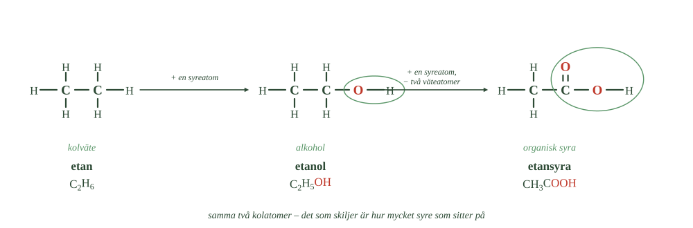
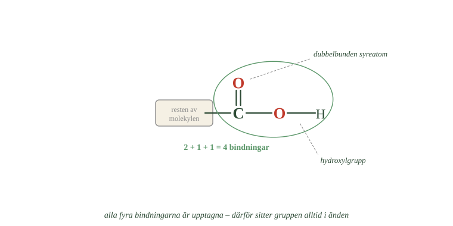
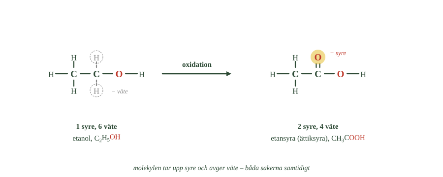
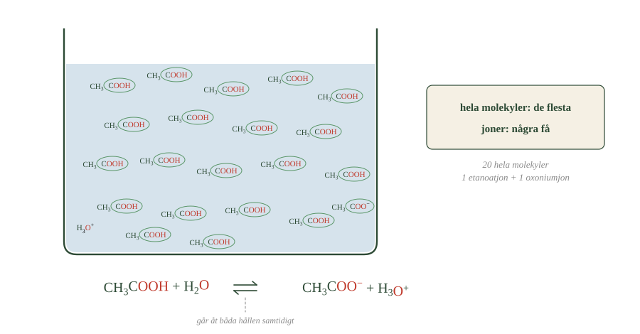

- Vad skiljer etan, etanol och etansyra åt?
- Varför räcker det inte med en OH-grupp för att ett ämne ska vara en syra?
- Vilka atomer ingår i karboxylgruppen?
- Varför sitter karboxylgruppen alltid i änden av kolkedjan?
- Vad berättar ändelsen -syra?
I förra delkapitlet fick alkoholerna sina egenskaper från hydroxylgruppen, –OH.
Den var en funktionell grupp — en bestämd samling atomer som avgör hur ämnet beter sig.
Nu kommer nästa grupp: karboxylgruppen. Ämnen som har den kallas organiska syror.
Karboxylgruppen gör att molekylen kan avge en vätejon. Och avger ett ämne vätejoner blir det surt. Här möts alltså organisk kemi och allt du redan kan om syror och pH.
Tre ämnen i rad
Titta på tre ämnen som alla har två kolatomer.
- Räkna syreatomerna i varje molekyl.
- Vad är det som är inringat i den mellersta och den högra molekylen?
- Hur många streck går från kolatomen till syret i den högra molekylen?

Etan är ett kolväte. På kolatomerna sitter bara väte.
Etanol är en alkohol. En väteatom har bytts mot en OH-grupp.
Etansyra är en organisk syra. Nu har det gått ett steg till.
Vad som är nytt i syran
I etansyra sitter det två syreatomer på samma kolatom.
Den ena sitter i en hydroxylgrupp, precis som i alkoholen. Den andra är dubbelbunden direkt till kolatomen.
Det är alltså inte nog med en OH-grupp för att ämnet ska bli en syra — alkoholer har ju också det.
Det som gör syran till en syra är kombinationen: en dubbelbunden syreatom och en hydroxylgrupp på samma kolatom.
Den kombinationen kallas karboxylgrupp.
Karboxylgruppen skrivs –COOH
Gruppen skrivs –COOH. Bokstäverna räknar upp vad som finns i den: en kolatom, två syreatomer och en väteatom.
Karboxylgruppen sitter alltid i änden av kolkedjan. Det finns ett skäl.
- Räkna strecken från kolatomen i mitten.
- Var sitter väteatomen — på kolet eller på syret?
- Varför kan den här gruppen inte sitta mitt i en kedja?

Räkna kolatomens bindningar. Två går till den dubbelbundna syreatomen. En går till hydroxylgruppen. Det är tre.
Då finns bara en bindning kvar, och den går till resten av molekylen. Kolatomen har helt enkelt inte plats att sitta mitt i en kedja.
Du kan tänka på en organisk syra som två delar: kolkedja + karboxylgrupp.
Namnet slutar på -syra
Namnen bygger på samma stammar som förut:
metan \(\rightarrow\) metanol \(\rightarrow\) metansyra etan \(\rightarrow\) etanol \(\rightarrow\) etansyra
Sedan följer propansyra och butansyra. Ändelsen -syra talar om att det är en organisk syra.
De enklaste syrorna har dessutom äldre namn, som används oftare i vardagen:
metansyra = myrsyra etansyra = ättiksyra butansyra = smörsyra
Lär dig båda. Du kommer att möta dem om vartannat.
- Vad skiljer etan, etanol och etansyra åt?
- Varför räcker det inte med en OH-grupp för att ett ämne ska vara en syra?
- Vilka atomer ingår i karboxylgruppen?
- Varför sitter karboxylgruppen alltid i änden av kolkedjan?
- Vad berättar ändelsen -syra?
I förra delkapitlet fick alkoholerna sina egenskaper från hydroxylgruppen, –OH. Den var en funktionell grupp — en bestämd grupp atomer som avgör hur ämnet beter sig.
Nu möter vi nästa: karboxylgruppen. Ämnen som innehåller den kallas organiska syror.
Karboxylgruppen gör att molekylen kan avge en vätejon, och därför blir ämnet surt. Här möts alltså den organiska kemin och det du redan kan om syror, oxoniumjoner och pH.
Kolväte, alkohol och organisk syra
Ställ tre ämnen bredvid varandra.
I ett kolväte sitter bara väte på kolatomerna. Metan, \(\ce{CH4}\), är det enklaste.
I en alkohol har en väteatom ersatts av en hydroxylgrupp. Metan blir metanol, \(\ce{CH3OH}\).
I en organisk syra har det gått ett steg till. Samma kolatom är nu både bunden till en hydroxylgrupp och dubbelbunden till en syreatom.
Det räcker alltså inte att en molekyl har en OH-grupp. Alkoholer har också det. Det speciella är kombinationen — en dubbelbunden syreatom och en hydroxylgrupp på samma kolatom.
Karboxylgruppen skrivs –COOH
Gruppen skrivs –COOH. Bokstäverna visar uppbyggnaden: en kolatom, två syreatomer och en väteatom.
Karboxylgruppen sitter alltid i änden av kolkedjan, och det finns ett skäl. Kolatomen i gruppen använder redan tre av sina fyra bindningar till syre — två i dubbelbindningen och en till hydroxylgruppen. Den fjärde går till resten av molekylen.
Man kan därför tänka på en organisk syra som två delar: kolkedja + karboxylgrupp.
Precis som hydroxylgruppen gjorde alkoholen till en alkohol är det karboxylgruppen som gör syran till en syra.
Namnet slutar på -syra
Namnen bygger på samma stammar som alkanerna och alkoholerna:
metan \(\rightarrow\) metanol \(\rightarrow\) metansyra etan \(\rightarrow\) etanol \(\rightarrow\) etansyra
Sedan följer propansyra och butansyra. Ändelsen -syra visar att ämnet är en organisk syra.
Flera av de enklaste har också äldre namn som används oftare:
metansyra kallas myrsyra · etansyra kallas ättiksyra · butansyra kallas smörsyra
Det är värt att lära sig båda, eftersom du kommer att möta dem om vartannat.
Varför just den kombinationen gör ämnet surt
Standardtexten säger att det är kombinationen av en dubbelbunden syreatom och en hydroxylgrupp som gör ämnet surt. Det stämmer, men det förklarar inte varför kombinationen fungerar.
Frågan är rimlig. En alkohol har också en OH-grupp, och den kan i princip också lämna ifrån sig sin väteatom. Men den gör det nästan aldrig. Etanol är inte en syra.
Skillnaden ligger inte i molekylen före reaktionen, utan i jonen som blir kvar efteråt.
När en alkohol avger sin väteatom sitter den negativa laddningen kvar på en enda syreatom. Den sitter trångt, jonen är instabil, och reaktionen går därför i praktiken baklänges nästan direkt.
När en karboxylsyra avger sin väteatom finns två syreatomer, och de sitter bredvid varandra. Laddningen fördelar sig över båda. Den blir inte längre en laddning på ett ställe utan en halv laddning på två.
Det fenomenet kallas resonans, och en resonansstabiliserad jon är betydligt mer stabil.
Och stabilitet hos produkten avgör om en reaktion sker. Är jonen stabil stannar den kvar som jon — alltså har syran avgett sin proton.
Samma princip förklarar mer än så. Fenol, som är en alkohol bunden till en ring av kolatomer, är surare än vanliga alkoholer eftersom ringen kan ta emot en del av laddningen. Ju fler platser laddningen kan spridas över, desto surare blir ämnet.
Om modellen. Standardnivån beskriver vilken grupp som gör ett ämne surt. Det räcker för att känna igen syror. Men frågan om varför har ett svar som inte handlar om syran alls — det handlar om jonen den lämnar efter sig. Kemin avgörs ofta av vad som blir kvar, inte av vad man började med.
- Hur känner man igen en oxidation i organisk kemi?
- Vad händer med antalet syre- och väteatomer när etanol blir ättiksyra?
- Vad gör ättiksyrabakterierna med vin som står framme?
- Vad betyder ordet vinäger?
- Varför bildar växter organiska syror?
Vad oxidation betyder
Du har mött oxidation förut.
Det tydligaste exemplet är rost. Järn reagerar med syre och bildar järnoxid.
I organisk kemi känner man igen en oxidation på att molekylen tar upp syre eller avger väte. Ofta händer båda sakerna.
Etanol blir ättiksyra
Etanol har formeln \(\ce{C2H5OH}\).
Oxideras den blir det etansyra, \(\ce{CH3COOH}\) — alltså ättiksyra.
- Hur många syreatomer finns i varje molekyl?
- Vilka atomer är streckade i den vänstra molekylen, och varför?
- Vad heter ämnet till höger i vardagsspråk?

Räkna atomerna och se vad som hänt.
Etanol har en syreatom. Ättiksyra har två. Molekylen har alltså tagit upp syre.
Etanol har sex väteatomer. Ättiksyra har fyra. Molekylen har alltså avgett väte.
Båda sakerna har hänt samtidigt — precis som definitionen säger.
Samma omvandling sker i levern när kroppen bryter ner etanol.
Därför heter vinäger vinäger
Ställ ett glas vin framme tillräckligt länge så händer något.
I luften finns ättiksyrabakterier. De använder etanolen i vinet och oxiderar den till ättiksyra. Vätskan blir surare och surare.
Det är precis så vinäger tillverkas.
Och ordet vinäger betyder just surt vin. Namnet beskriver alltså inte bara produkten utan den kemiska förändringen: etanolen har blivit ättiksyra.
Växter använder syror som försvar
Organiska syror finns i många växter, och de fyller en uppgift.
En sur miljö är obehaglig för många bakterier och svampar. Syran är därför en del av växtens kemiska försvar.
Den sura smaken påverkar också vilka djur som vill äta växten.
Tänk på omogen frukt. Den innehåller mycket syra och lite socker, och smakar därför surt. När frukten mognar minskar syrorna och sockret ökar.
Det är ingen slump. Frukten blir god precis när fröna är färdiga. Då vill djuren äta den, och fröna sprids vidare.
Det du uppfattar som smak har alltså en biologisk uppgift.
- Hur känner man igen en oxidation i organisk kemi?
- Vad händer med antalet syre- och väteatomer när etanol blir ättiksyra?
- Vad gör ättiksyrabakterierna med vin som står framme?
- Vad betyder ordet vinäger?
- Varför bildar växter organiska syror?
Oxidation betyder att ämnet tar upp syre eller avger väte
Du har mött oxidation förut. Det enklaste kännetecknet är att ett ämne reagerar med syre — när järn rostar tar järnet upp syre och bildar järnoxid.
I organisk kemi känns en oxidation igen på att molekylen tar upp syre eller avger väte.
När en alkohol blir en organisk syra sker båda sakerna samtidigt: molekylen får mer syre och mindre väte.
Etanol kan oxideras till ättiksyra
Etanol har formeln \(\ce{C2H5OH}\). Oxideras den blir det etansyra, \(\ce{CH3COOH}\) — alltså ättiksyra.
Räkna atomerna. Etanol har en syreatom, ättiksyra har två. Etanol har sex väteatomer, ättiksyra har fyra. Molekylen har tagit upp syre och avgett väte, precis som definitionen säger.
Det är samma omvandling som sker i levern när kroppen bryter ner etanol.
Därför heter vinäger vinäger
Samma sak händer när vin står framme.
I luften finns ättiksyrabakterier. De använder etanolen i vinet och oxiderar den till ättiksyra. Vätskan blir allt surare.
Det är så vinäger tillverkas — och ordet betyder just surt vin.
Namnet beskriver alltså inte bara produkten utan den kemiska förändring som skett: etanolen har blivit ättiksyra.
Syrorna finns i naturen av ett skäl
Organiska syror finns i många växter, och de fyller en funktion.
En sur miljö är ogynnsam för många bakterier och svampar. Syran är därför en del av växtens kemiska försvar. Den sura smaken påverkar också vilka djur som vill äta växten.
Omogen frukt innehåller mycket syra och lite socker, och smakar därför surt. När frukten mognar minskar syrorna och sockret ökar.
Det är ingen slump. När fröna är färdiga blir frukten samtidigt god, och djuret som äter den sprider fröna vidare.
Det vi uppfattar som smak har alltså en biologisk uppgift.
ca 330 ord, fyra rubriker
Oxidationen är en trappa med bestämda steg
Standardtexten säger att etanol kan oxideras till ättiksyra. Det stämmer, men det utelämnar att omvandlingen sker i två steg, och att det finns ett mellanläge med eget namn.
Trappan ser ut så här. Utgå från en kolatom som bär en OH-grupp och minst en väteatom.
Steg ett: molekylen avger två väteatomer. Kvar blir en kolatom med en dubbelbunden syreatom. Ämnet kallas en aldehyd. Ur etanol blir det acetaldehyd — samma ämne som gör att man mår illa dagen efter.
Steg två: molekylen tar upp en syreatom. Nu har kolatomen både en dubbelbunden syreatom och en hydroxylgrupp. Det är en karboxylsyra.
Trappan kan inte gå längre. En tredje oxidation skulle kräva att kolatomen bar ytterligare en väteatom, och det gör den inte.
Här kommer något du mötte i delkapitel 4. En primär alkohol har OH-gruppen på en ändkolatom, och den bär då två väteatomer. Den kan gå hela trappan.
En sekundär alkohol har OH-gruppen mitt i kedjan, och den kolatomen bär bara en väteatom. Den kan ta steg ett, men inte steg två. Produkten kallas en keton — aceton är den enklaste.
En tertiär alkohol har ingen väteatom alls på den kolatomen. Den kan inte oxideras.
Om modellen. "Etanol oxideras till ättiksyra" är ett korrekt slutresultat. Men oxidation i organisk kemi är inte en sak som händer eller inte händer — det är en trappa, och hur högt en molekyl kan klättra bestäms av hur många väteatomer som sitter på rätt kolatom.
- Vilken av karboxylgruppens atomer kan lossna?
- Vad bildas när vätejonen tas upp av en vattenmolekyl?
- Vad betyder det att en syra är svag?
- Vad betyder pilen som pekar åt två håll?
- Vad blir kvar av molekylen när vätejonen lämnat?
Vätejonen kan lossna
En syra är ett ämne som kan avge en vätejon.
I en organisk syra är det väteatomen i karboxylgruppens OH-del som kan lossna.
Möter etansyran en vattenmolekyl kan den lämna ifrån sig sin vätejon. Då bildas en oxoniumjon:
Oxoniumjonerna är det som gör lösningen sur och sänker pH.
Karboxylgruppen är alltså den del av molekylen där syrligheten sitter.
Men bara en del av molekylerna gör det
De flesta organiska syror är svaga syror.
Svag betyder inte lite. Det handlar om hur stor andel av molekylerna som faktiskt avger sin vätejon.
- Räkna de hela molekylerna och jonerna. Hur många är det av varje?
- Vad saknas hos jonen jämfört med molekylen?
- Vad betyder pilen som pekar åt två håll?

I en svag syra gör bara några få det. De allra flesta molekylerna simmar omkring hela och oförändrade.
I en stark syra som saltsyra gör nästan alla det.
Pilen som pekar åt två håll
Lägg märke till pilen i formeln: \(\ce{<=>}\)
Den betyder att reaktionen går åt båda hållen samtidigt.
Vissa molekyler lämnar ifrån sig sin vätejon i just detta ögonblick. Andra tar tillbaka den. Det pågår hela tiden, och det är därför bara en del av molekylerna är joner vid varje tillfälle.
En vanlig pil, \(\rightarrow\), hade betytt att reaktionen gick färdigt åt ett håll. Det gör den inte här.
Svag är inte samma sak som ofarlig
Det är därför citronsyra och ättiksyra kan finnas i mat medan saltsyra inte kan det.
Men var försiktig med ordet svag. En tillräckligt koncentrerad svag syra är frätande. Koncentrerad ättiksyra ger brännskador.
Svag beskriver hur många molekyler som avger sin vätejon — inte hur farligt ämnet är.
Kvar blir en negativ jon
När etansyran lämnat ifrån sig sin vätejon är molekylen inte längre neutral. Kvar finns:
\(\ce{CH3COO-}\)
Jonen har en negativ laddning och kallas etanoatjon. Det äldre namnet, som används oftare, är acetatjon.
Andra organiska syror bildar sina egna joner på samma sätt.
Jonerna blir viktiga längre fram, när organiska syror bildar salter och när estrar bildas.
- Vilken av karboxylgruppens atomer kan lossna?
- Vad bildas när vätejonen tas upp av en vattenmolekyl?
- Vad betyder det att en syra är svag?
- Vad betyder pilen som pekar åt två håll?
- Vad blir kvar av molekylen när vätejonen lämnat?
Väteatomen i karboxylgruppen kan avges
En syra är ett ämne som kan avge en vätejon.
Hos en organisk syra är det väteatomen i karboxylgruppens OH-del som lossnar. Möter etansyran en vattenmolekyl kan den lämna ifrån sig sin vätejon, och då bildas en oxoniumjon:
Oxoniumjonerna gör lösningen sur och sänker pH.
Karboxylgruppen är alltså den del av molekylen där syrligheten sitter.
Bara en del av molekylerna avger sin vätejon
De flesta organiska syror är svaga syror.
Det handlar om hur stor andel av molekylerna som avger sin vätejon. I en svag syra gör bara en del det. Många molekyler finns kvar oförändrade i lösningen.
Därför skrivs reaktionen med en dubbelpil, \(\ce{<=>}\). Den betyder att reaktionen går åt båda hållen samtidigt — vissa molekyler avger sin vätejon medan andra tar tillbaka den.
Det skiljer organiska syror från en stark syra som saltsyra, där nästan alla molekyler avger sin vätejon.
Det är därför citronsyra och ättiksyra kan finnas i mat, medan saltsyra inte kan det.
Men svag syra betyder inte ofarlig syra. En tillräckligt koncentrerad svag syra är frätande.
Kvar blir en negativ jon
När etansyran lämnat ifrån sig sin vätejon är molekylen inte längre neutral. Kvar finns:
\(\ce{CH3COO-}\)
Jonen har en negativ laddning och kallas etanoatjon. Det äldre namnet, som används oftare, är acetatjon.
Andra organiska syror bildar sina egna joner på samma sätt.
Jonerna blir viktiga längre fram, när organiska syror bildar salter och när vi ser hur estrar bildas.
Hur svag är en svag syra, mätt i tal?
Standardtexten säger att bara en del av molekylerna avger sin vätejon. Det är rätt, men "en del" är vagt. Hur stor del?
Ta vanlig ättiksyra i den styrka man har hemma. I den lösningen har ungefär en molekyl av hundra avgett sin vätejon. De övriga nittionio är hela.
I en saltsyralösning av samma styrka har praktiskt taget alla avgett sin.
Skillnaden är alltså inte liten. Den är hundrafaldig.
Men det är viktigt att förstå vad som pågår i lösningen. De nittionio molekylerna är inte samma nittionio hela tiden. Reaktionen går åt båda hållen oavbrutet — molekyler avger sin vätejon, joner tar tillbaka en, och det sker miljardtals gånger i sekunden.
Det som är konstant är inte vilka molekyler som är joner, utan hur många. Det tillståndet kallas jämvikt, och det är vad dubbelpilen betyder.
Kemister anger syrastyrka med ett tal som kallas pKa. Ju lägre tal, desto starkare syra. Saltsyra ligger på ungefär −6, myrsyra på 3,8, ättiksyra på 4,8 och etanol på omkring 16.
Skalan är logaritmisk, precis som pH. Ett steg betyder tio gånger. Att ättiksyra ligger elva steg under etanol betyder att den avger sin vätejon hundra miljarder gånger lättare.
Om modellen. "Svag syra" låter som en egenskap med två lägen — antingen är en syra stark eller svag. I själva verket är det en glidande skala som spänner över tjugotvå tiopotenser, och gränsen mellan stark och svag är en överenskommelse, inte en naturlag.
Laddar övningskort…
Laddar frågor ...